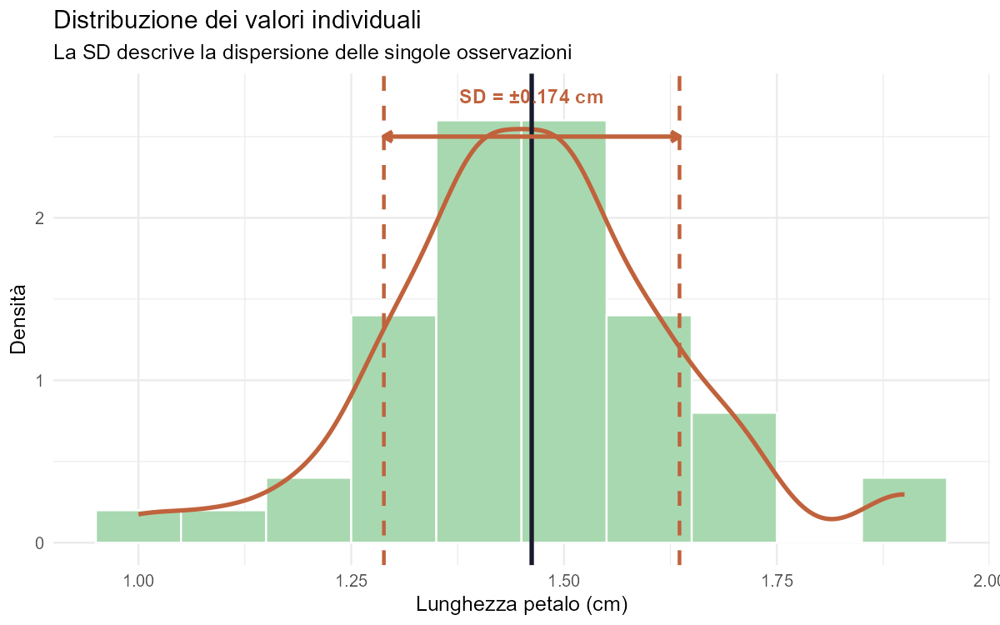
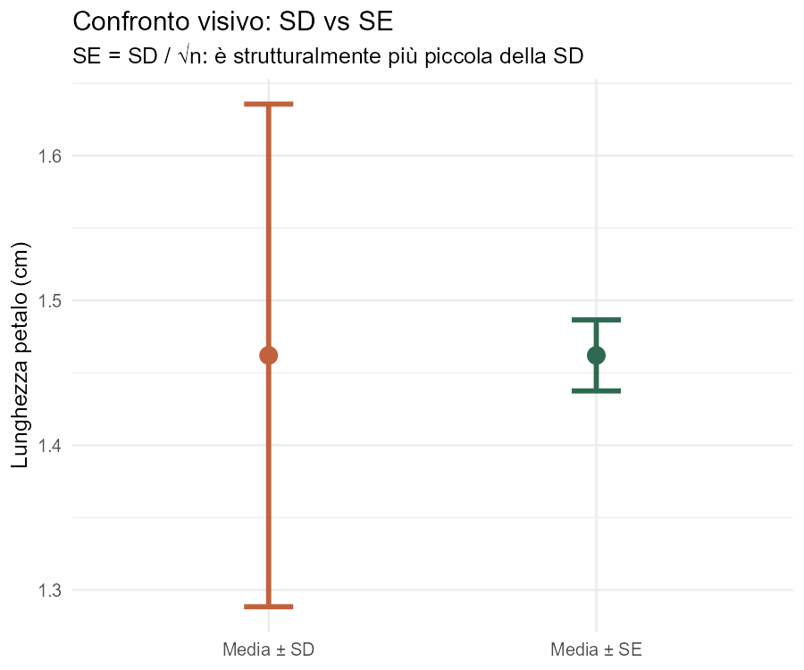
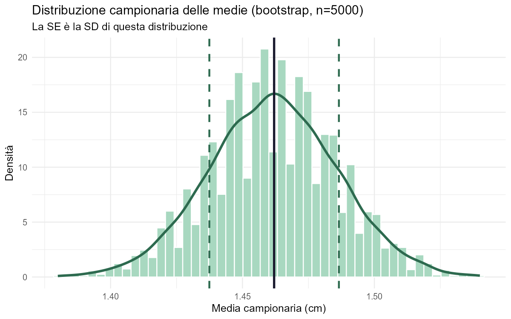
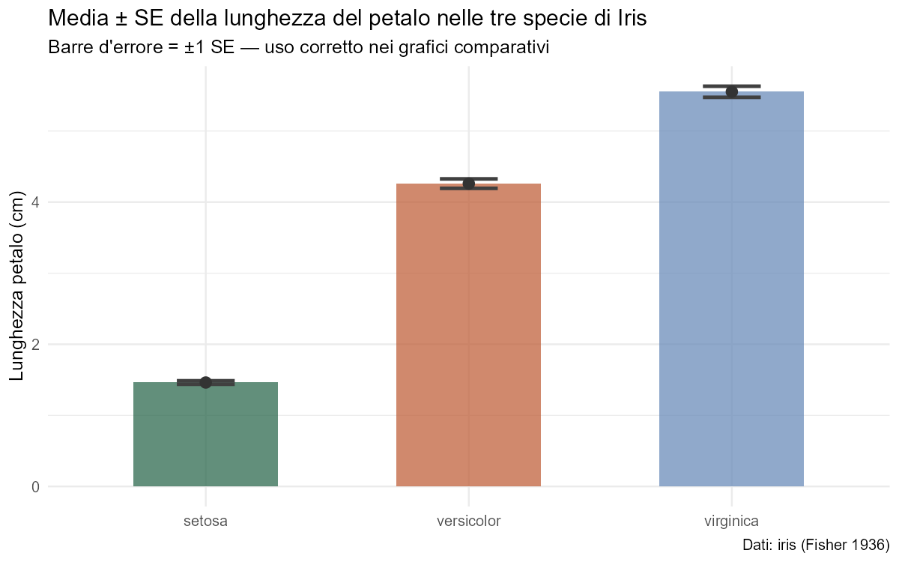

Introduzione
Nella letteratura scientifica due indici vengono frequentemente confusi oppure usati come sinonimi: la Deviazione Standard (SD, dall'inglese Standard Deviation) e l'Errore Standard della Media (SE, dall'inglese Standard Error of the Mean). Entrambi si esprimono nelle stesse unità dei dati e appaiono spesso nelle stesse posizioni (barre d'errore nei grafici, media ± valore nel testo), eppure rispondono a domande fondamentalmente diverse.
La SD risponde alla domanda: «Quanto variano i singoli individui nella mia popolazione o nel mio campione?»
La SE risponde alla domanda: «Quanto è precisa la mia stima della media della popolazione?»
Capire questa distinzione non è un dettaglio tecnico: è essenziale per interpretare correttamente i propri dati, scegliere il grafico più onesto e applicare i test statistici in modo appropriato. In questa breve guida vedremo la teoria, le formule, e li calcoleremo in R usando dati biologici reali.
Questa trattazione assume familiarità con i concetti di media campionaria e campionamento casuale. Concetti come distribuzione campionaria, Teorema Centrale del Limite e test t sono menzionati ma saranno trattati in lezioni dedicate.
La Deviazione Standard (SD)
Definizione
La Deviazione Standard campionaria misura la dispersione dei valori individuali attorno alla media campionaria. Ci dice quanto, in media, ogni singola osservazione si discosta dalla media del gruppo. È un indice della variabilità intrinseca del fenomeno studiato.
In biologia questo indice è onnipresente: la variabilità della lunghezza delle ali in una specie di insetti, la distribuzione della resa per pianta in un appezzamento agricolo, il peso corporeo in una popolazione di vertebrati. Tutte queste variabili hanno una loro SD che descrive quanto siano «eterogenei» gli individui del campione.
Formula
Dove: $x_i$ = valore dell'$i$-esima osservazione | $\bar{x}$ = media campionaria | $n$ = numerosità del campione | $n-1$ = gradi di libertà (correzione di Bessel)
Dividere per $n-1$ anziché per $n$ rende la varianza campionaria uno stimatore non distorto della varianza della popolazione $\sigma^2$. Questo accade perché la media campionaria $\bar{x}$ viene stimata dagli stessi dati usati per calcolare la SD, «consumando» un grado di libertà. Questo aspetto sarà approfondito in una lezione dedicata agli stimatori.
Proprietà principali
- Si misura nella stessa unità dei dati originali (es. cm, g, individui/trappola).
- È sempre non negativa; vale zero solo se tutti i valori sono identici.
- Non dipende sistematicamente da $n$: con campioni più grandi, la SD converge alla deviazione standard della popolazione $\sigma$, ma non diminuisce sistematicamente.
- Per distribuzioni approssimativamente normali, circa il 68% dei valori cade nell'intervallo $\bar{x} \pm 1 \cdot s$, e circa il 95% nell'intervallo $\bar{x} \pm 2 \cdot s$.
- È sensibile ai valori anomali (outlier): un valore estremo può gonfiare notevolmente la SD.
A cosa serve nella pratica
La SD è uno strumento descrittivo. Va utilizzato quando si vuole caratterizzare la variabilità biologica di un fenomeno, presentare la distribuzione di un carattere in una popolazione, o definire limiti di riferimento biologici (ad esempio il range «normale» di un parametro fisiologico). Nelle figure, barre di errore che rappresentano la SD mostrano dove si collocano gli individui, non la precisione della stima della media.
- Barre corte: Indicano che i valori del tuo campione sono tutti molto vicini al valore medio. C'è bassa variabilità e i dati sono molto "concentrati".
- Barre lunghe: Indicano che i valori del campione sono molto sparsi e lontani dalla media. C'è alta variabilità nel fenomeno che stai osservando.
L'Errore Standard della Media (SE)
Definizione
L'Errore Standard della Media stima la precisione con cui la media campionaria $\bar{x}$ approssima la vera media della popolazione $\mu$. In termini formali, è la deviazione standard della distribuzione campionaria delle medie: se ripetessimo il campionamento molte volte e calcolassimo ogni volta la media, quella sequenza di medie avrebbe una propria deviazione standard — e quella è esattamente lo SE.
Immaginate di campionare la lunghezza dei petali di 50 esemplari di Iris setosa in dieci diversi siti: otterreste dieci medie campionarie leggermente diverse. Lo SE quantifica quanto variano queste medie attorno alla vera media della specie.
Formula
Dove: $s$ = deviazione standard campionaria | $n$ = numerosità del campione
La formula rivela immediatamente una proprietà cruciale: lo SE è sempre più piccola della SD (poiché $\sqrt{n} > 1$ per $n > 1$), e diminuisce proporzionalmente a $1/\sqrt{n}$. Per dimezzare lo SE occorre quadruplicare la dimensione del campione.
Proprietà principali
- Si misura nella stessa unità dei dati, come la SD.
- Diminuisce all'aumentare di $n$: più osservazioni raccogliamo, più precisa è la stima della media.
- Dipende sia dalla variabilità intrinseca dei dati ($s$) sia dalla quantità di osservazioni ($n$).
- Fornisce la base per gli intervalli di confidenza: $IC_{95\%} \approx \bar{x} \pm 1.96 \cdot SE$ (per grandi campioni).
- Per campioni piccoli si usa il quantile della distribuzione t di Student: $\bar{x} \pm t_{\alpha/2,\, n-1} \cdot SE$.
A cosa serve nella pratica
Lo SE è uno strumento inferenziale. Va utilizzato quando si vogliono fare affermazioni sulla media della popolazione, costruire intervalli di confidenza, o confrontare le medie di gruppi diversi (trattamenti, specie, siti, anni). Nelle figure, barre di errore che rappresentano lo SE mostrano l'incertezza nella stima della media, che è l'informazione rilevante per i confronti tra gruppi.
Confronto tra SD e SE
La tabella seguente riassume le differenze chiave. Tenerle presenti facilita enormemente la scelta corretta nella pratica quotidiana.
| Aspetto | Deviazione Standard (SD) | Errore Standard (SE) |
|---|---|---|
| Cosa misura | Variabilità dei singoli valori osservati | Precisione della stima della media |
| Domanda a cui risponde | «Quanto variano gli individui?» | «Quanto è precisa la mia media?» |
| Effetto di n | Stabile (converge a $\sigma$) | Diminuisce come $1/\sqrt{n}$ |
| Tipo di statistica | Descrittiva | Inferenziale |
| Formula | $s = \sqrt{\sum(x_i-\bar{x})^2/(n-1)}$ | $SE = s/\sqrt{n}$ |
| Barre d'errore nelle figure | Per descrivere la dispersione dei dati | Per confronti tra medie di gruppi diversi |
| Rapporto reciproco | SD ≥ SE sempre | SE = SD / $\sqrt{n}$ ≤ SD |
Molti articoli riportano barre d'errore senza specificare se rappresentano SD o SE. Poiché lo SE è sempre più piccola della SD, riportare SE in un grafico descrittivo fa sembrare i dati molto meno variabili di quanto siano. Alcune riviste impongono l'uso dell'intervallo di confidenza al 95% proprio per chiarezza. Verificate sempre la legenda delle figure.
Esempio Pratico in R
Utilizziamo il dataset iris, integrato di default in R, concentrandoci sulla specie Iris setosa e sulla variabile lunghezza del petalo (Petal.Length). Il campione è composto da $n = 50$ misurazioni espresse in centimetri. È un dataset semplice, biologicamente reale, e perfetto per illustrare concretamente i due indici.
Gli script R completi e commentati sono disponibili nella cartella R/ del repository e si scaricano con i pulsanti nelle intestazioni dei riquadri grigi qui sotto.
# Caricamento dataset integrato in R
data(iris)
# Estrazione: Iris setosa, lunghezza del petalo
setosa_pl <- iris[iris$Species == "setosa", "Petal.Length"]
# --- Parametri base ---
n <- length(setosa_pl) # numerosità campionaria
media <- mean(setosa_pl) # media campionaria
# --- Deviazione Standard (SD) ---
# sd() usa la correzione di Bessel (n-1): stimatore non distorto
sd_val <- sd(setosa_pl)
# Verifica manuale
sd_manuale <- sqrt(sum((setosa_pl - media)^2) / (n - 1))
# all.equal(sd_val, sd_manuale) → TRUE
# --- Errore Standard della Media (SE) ---
# Non esiste una funzione dedicata in R base
se_val <- sd_val / sqrt(n)
# --- Intervallo di Confidenza al 95% ---
t_critico <- qt(0.975, df = n - 1) # distribuzione t di Student
ic_low <- media - t_critico * se_val
ic_high <- media + t_critico * se_val
# --- Output ---
cat(sprintf(" n : %d\n", n))
cat(sprintf(" Media (x̄) : %.4f cm\n", media))
cat(sprintf(" Deviazione Standard (SD) : %.4f cm\n", sd_val))
cat(sprintf(" Errore Standard (SE) : %.4f cm\n", se_val))
cat(sprintf(" Media ± SD : [%.4f – %.4f] cm\n",
media - sd_val, media + sd_val))
cat(sprintf(" Media ± SE : [%.4f – %.4f] cm\n",
media - se_val, media + se_val))
cat(sprintf(" IC 95%% (t di Student, df=%d) : [%.4f – %.4f] cm\n",
n - 1, ic_low, ic_high))# Dipendenze: ggplot2
# install.packages("ggplot2")
library(ggplot2)
if (!dir.exists("img")) dir.create("img")
data(iris)
setosa_pl <- iris[iris$Species == "setosa", "Petal.Length"]
n <- length(setosa_pl); media <- mean(setosa_pl)
sd_val <- sd(setosa_pl); se_val <- sd_val / sqrt(n)
df <- data.frame(x = setosa_pl)
col_sd <- "#C0623C"; col_se <- "#2d6a4f"; col_med <- "#1A1A2E"
# --- GRAFICO 1: Distribuzione + ±SD ---
p1 <- ggplot(df, aes(x = x)) +
geom_histogram(aes(y = after_stat(density)),
binwidth=0.1, fill="#a8d8b0", color="white") +
geom_density(color=col_sd, linewidth=1.2) +
geom_vline(xintercept=media, color=col_med, linewidth=1.2) +
geom_vline(xintercept=c(media-sd_val, media+sd_val),
color=col_sd, linetype="dashed", linewidth=1) +
annotate("segment", x=media-sd_val, xend=media+sd_val, y=2.5, yend=2.5,
color=col_sd, linewidth=1.2,
arrow=arrow(ends="both", length=unit(0.2,"cm"))) +
annotate("text", x=media, y=2.75, fontface="bold", color=col_sd, size=4,
label=paste0("SD = ±", round(sd_val,3), " cm")) +
labs(title="Distribuzione dei valori individuali",
subtitle="La SD descrive la dispersione delle singole osservazioni",
x="Lunghezza petalo (cm)", y="Densità") +
theme_minimal(base_size=12)
# --- GRAFICO 2: SD vs SE come barre d'errore ---
df_err <- data.frame(
indice = factor(c("Media ± SD","Media ± SE"),
levels=c("Media ± SD","Media ± SE")),
media = c(media, media),
lower = c(media-sd_val, media-se_val),
upper = c(media+sd_val, media+se_val))
p2 <- ggplot(df_err, aes(x=indice, y=media, color=indice,
ymin=lower, ymax=upper)) +
geom_point(size=4) + geom_errorbar(width=0.15, linewidth=1.3) +
scale_color_manual(values=c("Media ± SD"=col_sd,"Media ± SE"=col_se)) +
labs(title="Confronto visivo: SD vs SE",
subtitle="SE = SD / √n: è strutturalmente più piccola della SD",
x=NULL, y="Lunghezza petalo (cm)") +
theme_minimal(base_size=12) + theme(legend.position="none")
# --- GRAFICO 3: Distribuzione campionaria (bootstrap) ---
set.seed(42)
medie_sim <- replicate(5000, mean(sample(setosa_pl, n, replace=TRUE)))
p3 <- ggplot(data.frame(m=medie_sim), aes(x=m)) +
geom_histogram(aes(y=after_stat(density)), bins=50,
fill="#a8d8c0", color="white") +
geom_density(color=col_se, linewidth=1.3) +
geom_vline(xintercept=media, color=col_med, linewidth=1.2) +
geom_vline(xintercept=c(media-se_val, media+se_val),
color=col_se, linetype="dashed", linewidth=1) +
labs(title="Distribuzione campionaria delle medie (bootstrap, n=5000)",
subtitle="La SE è la SD di questa distribuzione",
x="Media campionaria (cm)", y="Densità") +
theme_minimal(base_size=12)
# --- GRAFICO 4: Confronto tra le tre specie (uso inferenziale) ---
df_sp <- do.call(data.frame,
aggregate(Petal.Length ~ Species, data=iris,
FUN=function(x) c(mean=mean(x), se=sd(x)/sqrt(length(x)))))
names(df_sp) <- c("Species","mean","se")
p4 <- ggplot(df_sp, aes(x=Species, y=mean, fill=Species)) +
geom_col(alpha=0.75, width=0.55) +
geom_errorbar(aes(ymin=mean-se, ymax=mean+se),
width=0.22, linewidth=1.1, color="grey25") +
geom_point(size=3, color="grey20") +
scale_fill_manual(values=c("setosa"="#2d6a4f",
"versicolor"="#C0623C","virginica"="#6b8cba")) +
labs(title="Media ± SE della lunghezza del petalo nelle tre specie di Iris",
subtitle="Barre d'errore = ±1 SE — uso corretto nei grafici comparativi",
x=NULL, y="Lunghezza petalo (cm)", caption="Dati: iris (Fisher 1936)") +
theme_minimal(base_size=12) + theme(legend.position="none")
# Salvataggio
ggsave("img/grafico1_distribuzione_sd.png", p1, width=8, height=5, dpi=150, bg="white")
ggsave("img/grafico2_sd_vs_se.png", p2, width=6, height=5, dpi=150, bg="white")
ggsave("img/grafico3_bootstrap_se.png", p3, width=8, height=5, dpi=150, bg="white")
ggsave("img/grafico4_confronto_specie.png", p4, width=8, height=5, dpi=150, bg="white")
message("✔ Grafici salvati in img/")Grafici prodotti dagli script
Eseguendo lo Script 02 in R vengono salvati quattro grafici nella cartella img/. Di seguito la loro descrizione interpretativa.




Come Interpretare i Risultati
Lettura critica dell'output numerico
Riferiamoci ai valori calcolati per Iris setosa, lunghezza petali ($n = 50$):
- SD = 0.174 cm. I singoli petali si discostano in media di 0.17 cm dalla media. Circa il 68% dei petali di I. setosa ha una lunghezza tra 1.29 e 1.64 cm. Questo è un dato sulla biologia della specie.
- SE = 0.025 cm. La nostra media campionaria (1.462 cm) è stimata con un'incertezza di circa ±0.025 cm. Questo ci dice quanto è affidabile la stima, indipendentemente da quanto varino gli individui.
- IC 95% = [1.413 – 1.511] cm. Possiamo affermare con il 95% di confidenza che la vera media della popolazione di I. setosa cade in questo intervallo.
Il rapporto $SD/SE = 0.174/0.025 \approx 7 = \sqrt{50}$ non è casuale: è sempre esattamente $\sqrt{n}$. Se avessimo 200 osservazioni invece di 50, la SD rimarrebbe intorno a 0.174 cm (la variabilità biologica non cambia), ma la SE scenderebbe a $0.174/\sqrt{200} \approx 0.012$ cm. Una SD piccola riflette individui biologicamente simili; una SE piccola riflette tanti dati raccolti.
Interpretazione dei grafici
Il Grafico 1 mostra la distribuzione dei valori individuali con la SD sovrapposta. Le linee tratteggiate abbracciano la grande maggioranza dei petali: questa è la variabilità biologica reale della specie.
Il Grafico 2 mette a confronto SD e SE sulla stessa scala. La differenza visiva è immediata e spesso sorprendente per chi non ci ha mai riflettuto: entrambe si misurano in centimetri, eppure lo SE appare quasi un punto. Questo non significa che i dati siano «più precisi» di quanto mostrino: significa che con $n=50$ la stima della media è molto stabile.
Il Grafico 3 è quello più istruttivo sul piano concettuale. Simulando 5000 estrazioni casuali di 50 petali, la distribuzione delle medie ottenute è molto più stretta della distribuzione dei valori individuali. La sua SD è uguale allo SE teorico. Lo SE è letteralmente la «deviazione standard delle possibili medie campionarie» — ed è per questo che ci dice quanto è precisa la nostra stima.
Il Grafico 4 mostra l'uso corretto dello SE in un contesto comparativo. Le tre specie di Iris differiscono notevolmente nella lunghezza dei petali, e le barre ±SE rendono evidente questa differenza in modo statisticamente onesto.
L'Errore Standard nelle Pratiche Inferenziali
Intervalli di Confidenza
L'applicazione più immediata dello SE è la costruzione dell'intervallo di confidenza (IC) della media. Per campioni di dimensione $n \geq 30$ è spesso accettabile l'approssimazione normale:
Per campioni più piccoli, il coefficiente 1.96 deve essere sostituito con il quantile della distribuzione t di Student con $n-1$ gradi di libertà (qt(0.975, df = n-1) in R). Con $n=50$ si ottiene $t \approx 2.009$, molto prossimo a 1.96. Con $n=10$ invece $t \approx 2.262$: l'intervallo risulta più ampio perché l'incertezza con pochi dati è maggiore. La distribuzione t di Student sarà oggetto di una lezione dedicata.
Confronto tra Trattamenti, Specie o Siti
In agronomia e in entomologia, molte domande di ricerca si riducono a confrontare le medie di due o più gruppi: la resa media in parcelle trattate con pesticida A vs pesticida B; la densità media di afidi in più varietà di coltura; la lunghezza media delle larve a diverse temperature di allevamento. In tutti questi casi la SE è l'indice centrale.
Una regola empirica utile (ma non sostitutiva di un test formale): se gli intervalli di confidenza al 95% di due gruppi non si sovrappongono, la differenza è quasi certamente significativa con $p < 0.05$. Se si sovrappongono, la significatività deve essere valutata con un test statistico appropriato.
Il flusso operativo tipico in una valutazione statistica sperimentale è:
- Calcolare media e SE (o IC 95%) per ciascun gruppo o trattamento.
- Visualizzare con un grafico a barre o a punti con barre d'errore ±SE.
- Applicare il test statistico opportuno: t-test per due gruppi, ANOVA per tre o più gruppi.
- Riportare il valore del test, i gradi di libertà, il valore $p$ e l'effect size.
Il test t e l'ANOVA, il calcolo della potenza statistica e la dimensione campionaria minima saranno trattati in lezioni successive.
SD o SE nelle Barre d'Errore: la Scelta Pratica
Questa è la domanda più frequente, e la risposta è semplice se si ha chiaro l'obiettivo della figura:
- Barre = SD quando lo scopo è mostrare la variabilità biologica del campione o definire limiti di riferimento per valori individuali. Esempio: descrivere il range di peso delle larve in una colonia.
- Barre = SE o IC 95% quando lo scopo è confrontare medie tra gruppi diversi. Le barre di errore in questi grafici devono esprimere l'incertezza sulla stima della media, non la dispersione degli individui.
- Sempre specificare in legenda quale dei due indici è rappresentato. Scrivere semplicemente «le barre rappresentano l'errore» è insufficiente.
Distribuzione campionaria delle medie e Teorema Centrale del Limite · Correzione di Bessel e stimatori non distorti · Test t di Student per uno e due campioni indipendenti · ANOVA a una via · Confronti multipli (post-hoc) · Effect size (Cohen's d, η²) · Potenza statistica e calcolo della dimensione campionaria minima.
Conclusioni
SD e SE sono entrambi indici fondamentali nella pratica statistica delle scienze della vita, ma non sono intercambiabili: descrivono due aspetti completamente diversi della realtà sperimentale.
La Deviazione Standard è uno strumento descrittivo: riflette la variabilità biologica degli individui nel campione. Aumentare il campione non la riduce; converge verso una proprietà della popolazione.
L'Errore Standard è uno strumento inferenziale: quantifica l'incertezza della nostra stima della media. Aumentare il campione lo riduce proporzionalmente a $1/\sqrt{n}$; non ci dice nulla sulla variabilità biologica dei singoli individui.
Sul dataset Iris setosa abbiamo visto concretamente: con $n = 50$, $SD = 0.174$ cm mentre $SE = 0.025$ cm. Il rapporto è $\sqrt{50} \approx 7$: strutturale, non accidentale. Con 200 osservazioni, la SD resterebbe ~0.174 cm mentre la SE scenderebbe a ~0.012 cm.
| Quando ho questo obiettivo… | Uso questo indice |
|---|---|
| Descrivere quanto variano i singoli individui del campione | SD |
| Capire se un valore individuale è «normale» o anomalo | SD |
| Stimare l'incertezza della media campionaria | SE |
| Costruire un intervallo di confidenza per la media | SE |
| Confrontare le medie di trattamenti / specie / siti | SE (o IC 95%) |
| Barre d'errore in un grafico comparativo | SE — specificarlo in legenda |
Il messaggio finale è semplice: la prossima volta che vedete (o producete) un grafico con barre d'errore, chiedete — o dichiarate — sempre se quelle barre sono SD o SE. Non è burocrazia: è onestà scientifica.